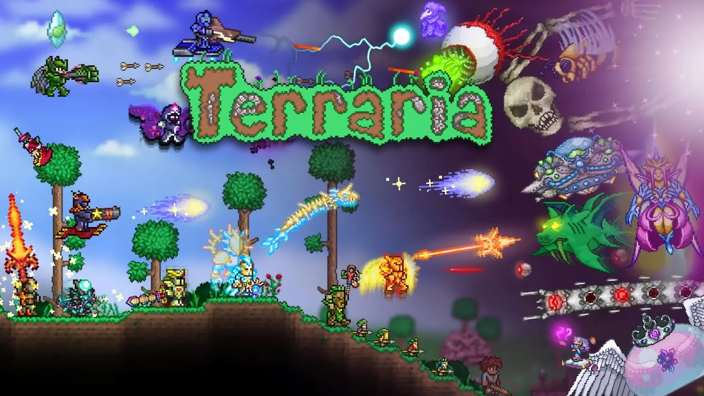

What is Terraria?
Terraria is a 2-D sandbox, action-adventure, role-playing video-game developed and created by indie game company Re-Logic. It features simple pixelated graphics with an upbeat electronic soundtrack that creates a different atmosphere for each new biome. Many people who have heard of Terraria often refer to it as "2-D Minecraft" due to the similarities between the two games. However, this is not completely the case. While both games are sandbox games, Terraria is more of an action-adventure game with RPG elements while Minecraft is more of a survival game with crafting and building elements. Terraria has a much larger focus on combat and exploration than Minecraft does. None of that is to say that one game is better than another or that the companies have bad blood between them, in fact, there are numerous occasions where Minecraft has encouraged it's players to try Terraria and vice versa. Terraria was released on May 16, 2011 and sold 50,000 copies on it's first day. It would eventually become one of the best selling video games of all time with 70 million copies sold as of May 2026.

What can you do?
Terraria offers nearly infinite replayablilty with unique boss battles and enemies, smooth progression, and countless items to build and create with. You can choose to play with friends in multiplayer or go solo and explore the world on your own. Players have the freedom to find and explore many different biomes and sub-biomes throughout the world. Such as, the ocean, the jungle, the desert, the snow biome, and many more. Each biome has it's own unique properties, enemies to fight, and items to discover. With the new addition of "secret seeds" in the 1.4.4 update, players can now generate special worlds for fresh challenges and different experiences. The game has a total of 32 different bosses to fight and defeat with over 300 enemies aswell. Players are free to do just about anything, whether it be progressing through the game as fast as possible, building an otherworldly base, or spending 2 hours fighting the same boss for one item. There is no shortage of things to do in Terraira.